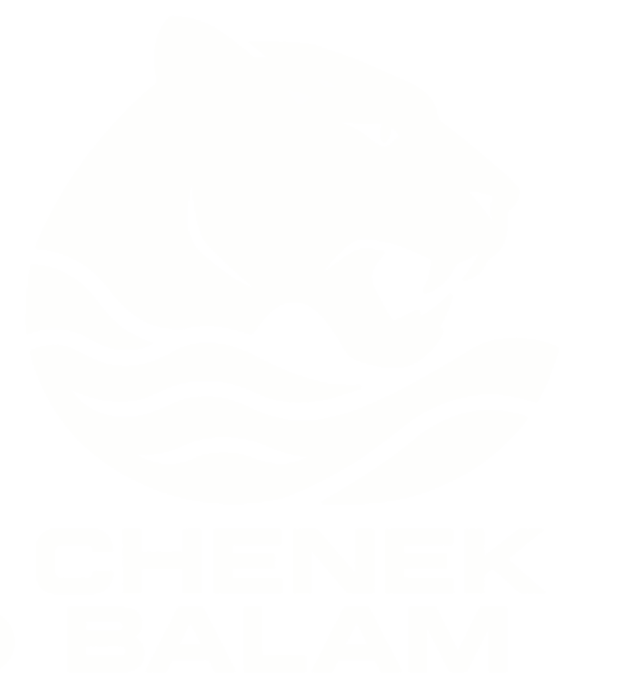
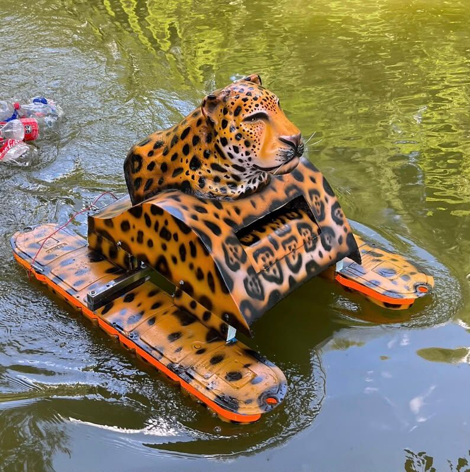
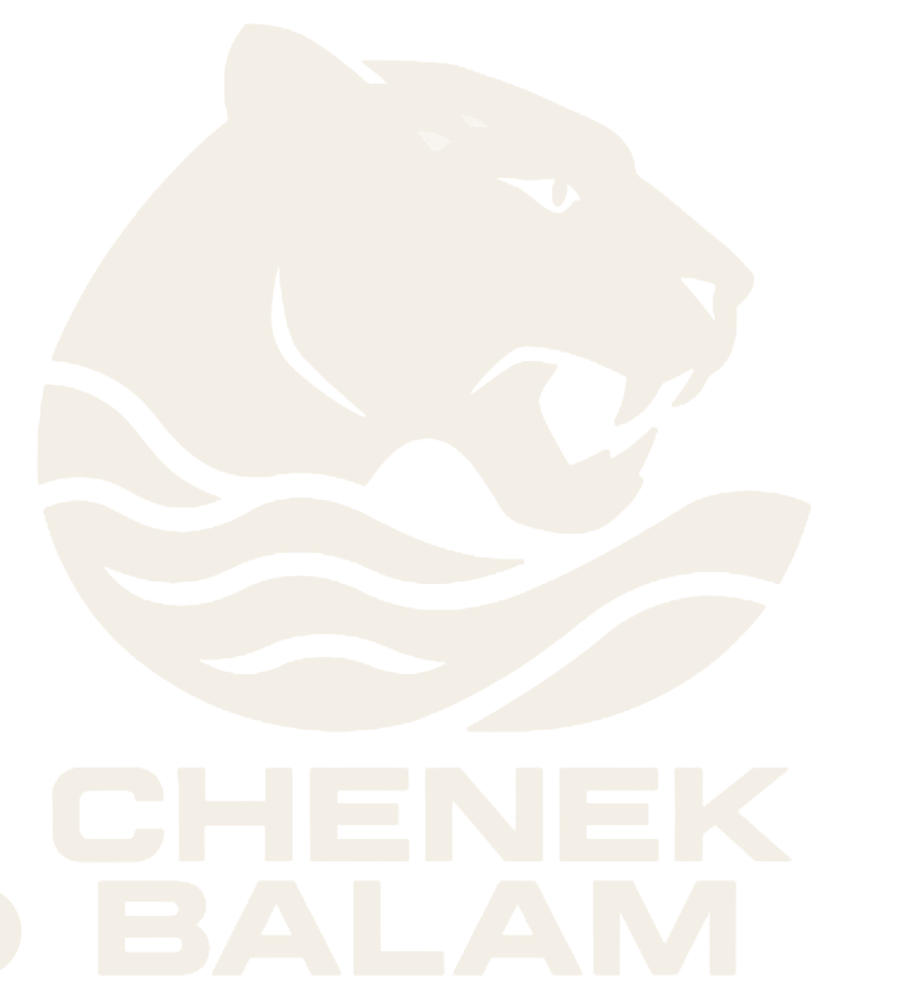
CHENEK BALAM
FERIA DEL EMPRENDIMIENTO 2026
El robot acuático chiapaneco que limpia ríos y lagunas y monitorea la calidad del agua.
Sergio Antonio Rayo Cabrera (representante) · Eylan Jarib Cruz Gómez · Brayam Alexis Ríos García · Cristian Alfredo Ovando Pérez
Instituto Tecnológico de Tuxtla Gutiérrez · TecNM
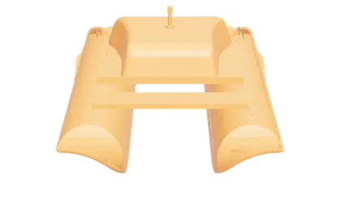
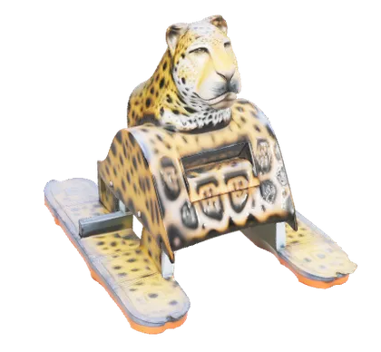
CHENEK BALAM
02 / 17
LA NECESIDAD
45,000 t
de desechos sólidos se acumulan cada año en el Cañón del Sumidero; cerca del 90 % es PET.
59.1 %
de los cuerpos de agua monitoreados en México están contaminados.
11 M t
de plástico llegan a los océanos cada año; los ríos son su principal vía.
Fuentes: López Pimentel (2015), tesis de maestría, UNAM; CONAGUA; PNUMA.
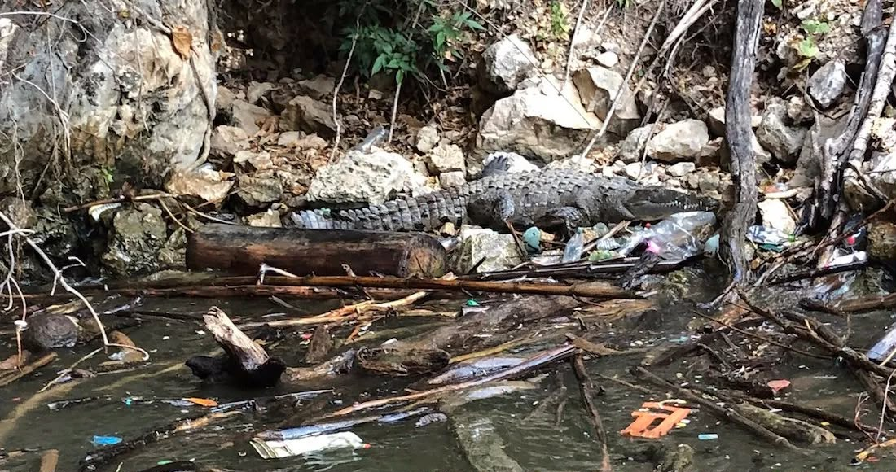
CHENEK BALAM
03 / 17
CÓMO SE LIMPIA HOY
| Método actual | Su limitación |
|---|---|
| Cuadrillas manuales | Riesgo de infecciones y ahogamiento; lentas y limitadas a las orillas |
| Lanchas a motor con redes | Combustión, derrames de aceite y ruido en áreas naturales |
| Barreras flotantes | Pasivas: solo retienen lo que la corriente les lleva |
| Robots extranjeros | De 15,000 a más de 40,000 dólares, sin refacciones ni soporte en México |
Robots de referencia: WasteShark, ClearBot y Jellyfishbot.
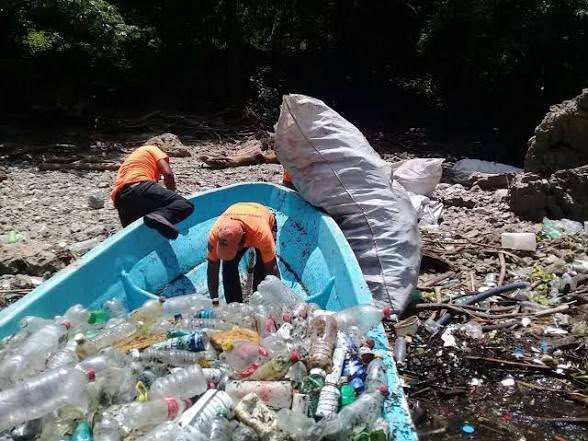
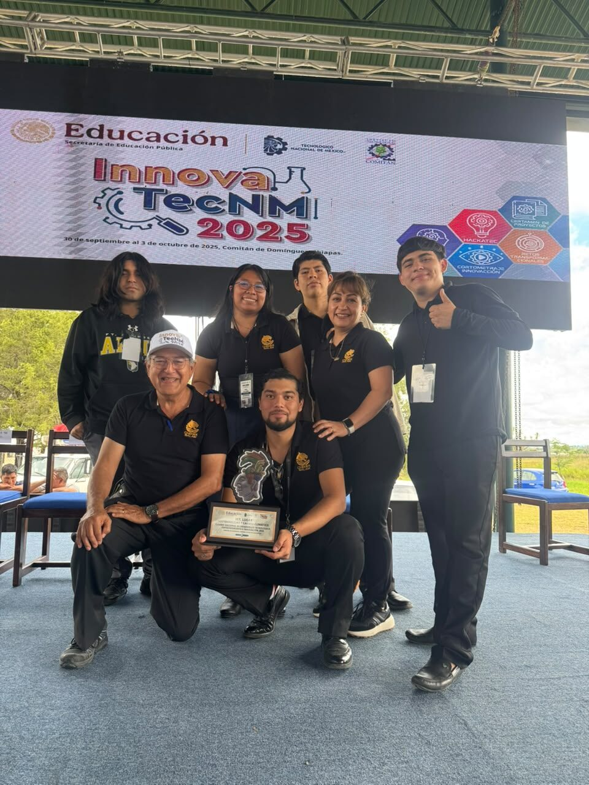
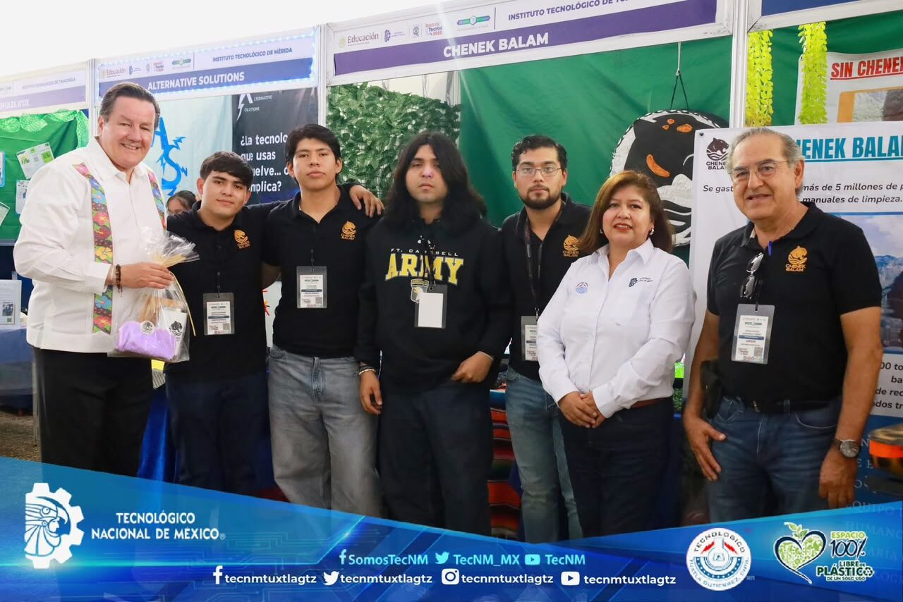
CHENEK BALAM
04 / 17
VALIDACIÓN
11 robots comprometidos con Quintana Roo.
1.er lugar en Sostenibilidad en InnovaTecNM, etapas local (Tuxtla) y regional (Comitán); etapa nacional en Pachuca.
Convenio del Tec de Tuxtla con la Secretaría de Pesca y Acuacultura de Chiapas.
Presentado ante la Presidenta de la República.
Razón social autorizada por la Secretaría de Economía y solicitud de marca ante el IMPI.
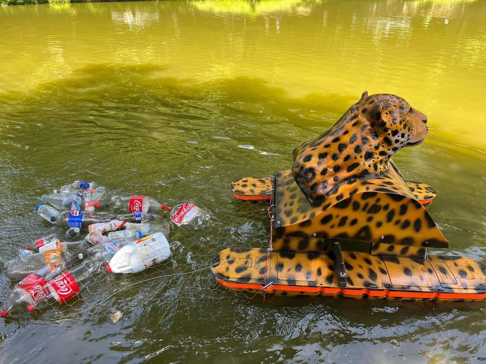
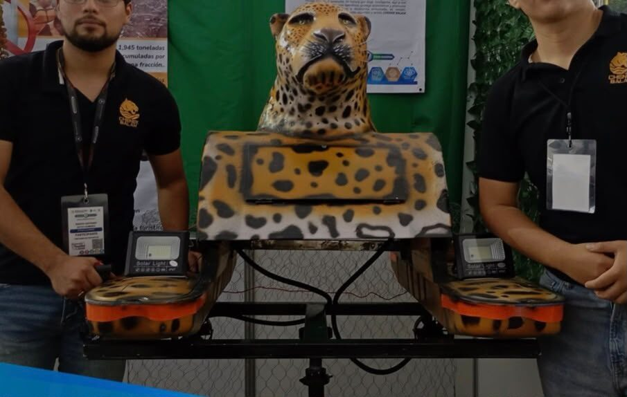
CHENEK BALAM
05 / 17
NUESTRA SOLUCIÓN
120 kg de residuos recolectados en 30 minutos con el prototipo actual.
Operación remota: nadie tiene que meterse al agua.
Monitoreo del agua: pH, turbidez, conductividad y temperatura en tiempo real.
Cero emisiones: propulsión eléctrica y recarga solar.
CHENEK BALAM
06 / 17
FICHA TÉCNICA
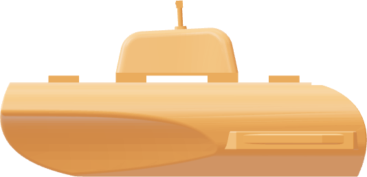
Vista lateral
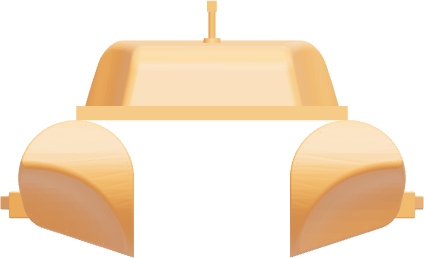
Vista frontal
Los modelos CHB01-27 y CHB02-27 usan el mismo catamarán; solo cambia el sistema electrónico que se instala en él.
| Medida | Metros | Pulgadas |
|---|---|---|
| Largo total | 3.31 m | 130.50 |
| Largo de los cascos | 3.07 m | 120.85 |
| Ancho total | 1.69 m | 66.40 |
| Alto total | 1.30 m | 51.25 |
| Ancho de cada pontón | 0.40 m | 15.75 |
| Alto de los cascos | 0.64 m | 25.20 |
| Plataforma frontal | 1.05 m | 41.19 |
| Módulo central | 1.30 m | 51.00 |
Medidas tomadas del plano del catamarán y convertidas a metros (1 pulgada = 2.54 cm).
CHENEK BALAM
07 / 17
LÍNEA DE MODELOS CHB-27
| Qué incluye | CHB01-27 Catamarán | CHB02-27 Jaguar Inteligente |
|---|---|---|
| Catamarán de fibra de vidrio de 3.31 × 1.69 m | ✓ | ✓ |
| Figura de jaguar | — | ✓ |
| Motores eléctricos y baterías de litio | — | ✓ |
| Banda recolectora y báscula | — | ✓ |
| GPS, control remoto y regreso a base | — | ✓ |
| Cámara con IA que identifica basura | — | ✓ |
| LiDAR para esquivar obstáculos | — | ✓ |
| Sensores de calidad del agua y datos en la app | — | ✓ |
| Precio sin IVA Precio con IVA | $104,900 $121,684 | $156,000 $180,960 |
CHB01-27 · Catamarán
CHB02-27 · Jaguar Inteligente
CHENEK BALAM
08 / 17
INNOVACIÓN
Navega hacia la basura en vez de esperar a que la corriente la acerque.
Sensores de calidad del agua, GPS y pesaje, con datos en una app.
Costo accesible, refacciones locales y respaldo del TecNM.
Diseño de jaguar que atrae al turismo y educa sobre el agua.
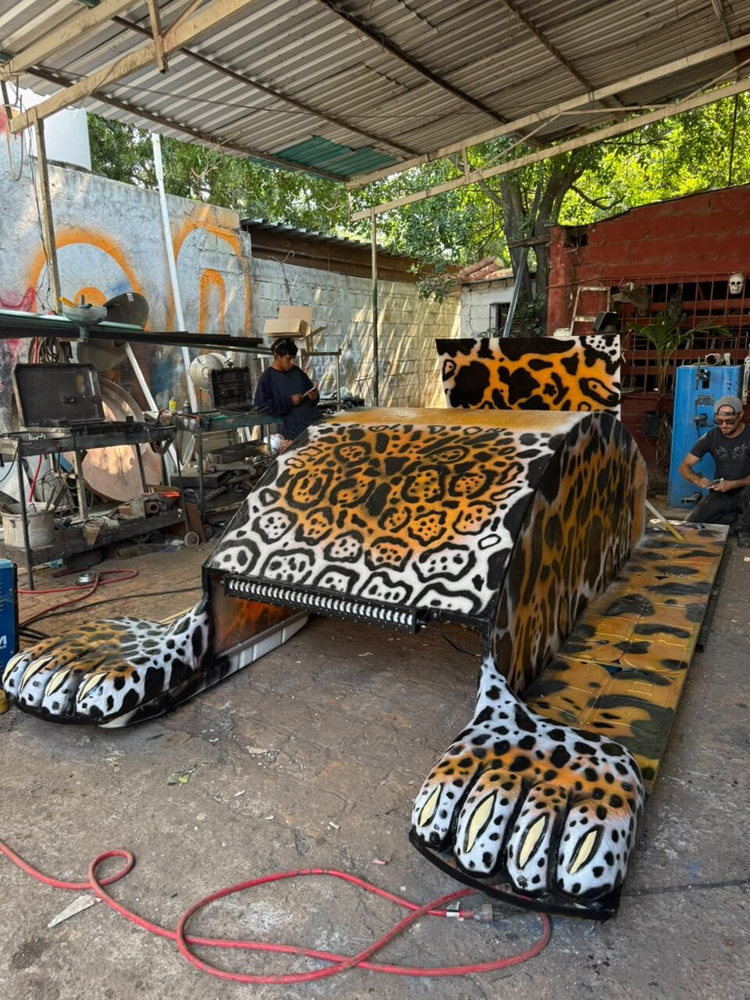
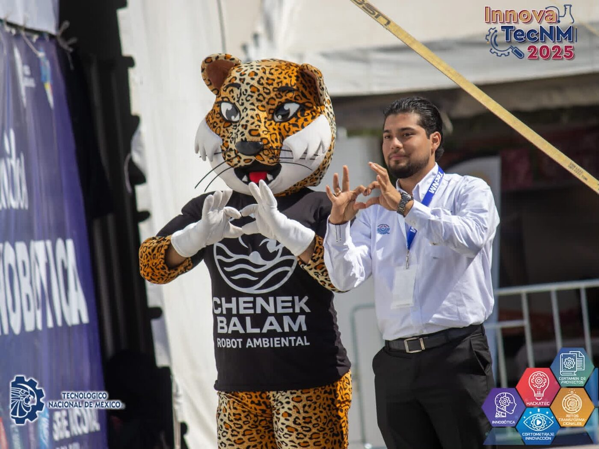
Construcción del casco con figura de jaguar y la mascota del proyecto en InnovaTecNM 2025.
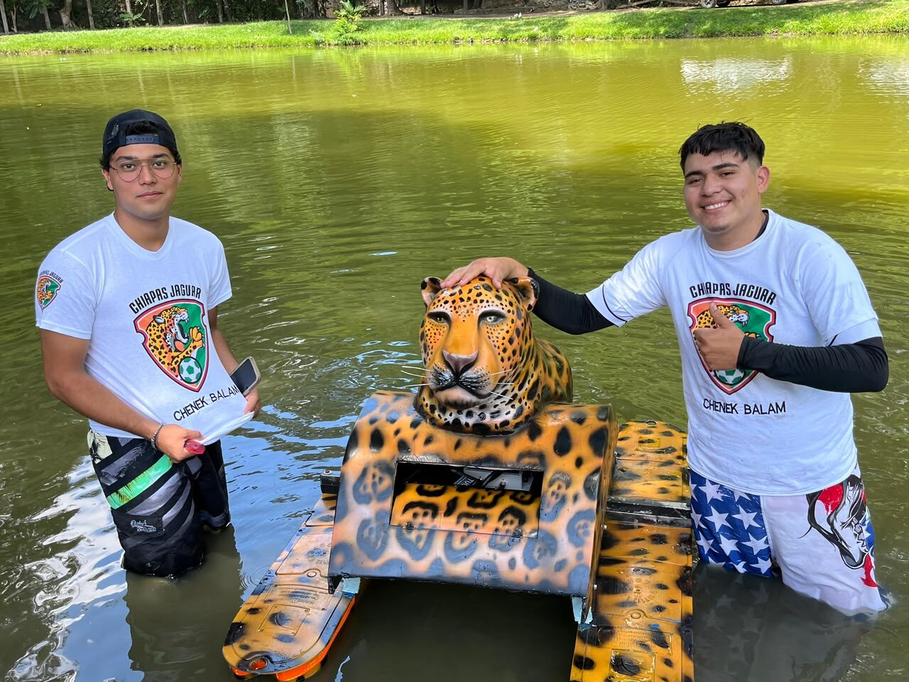
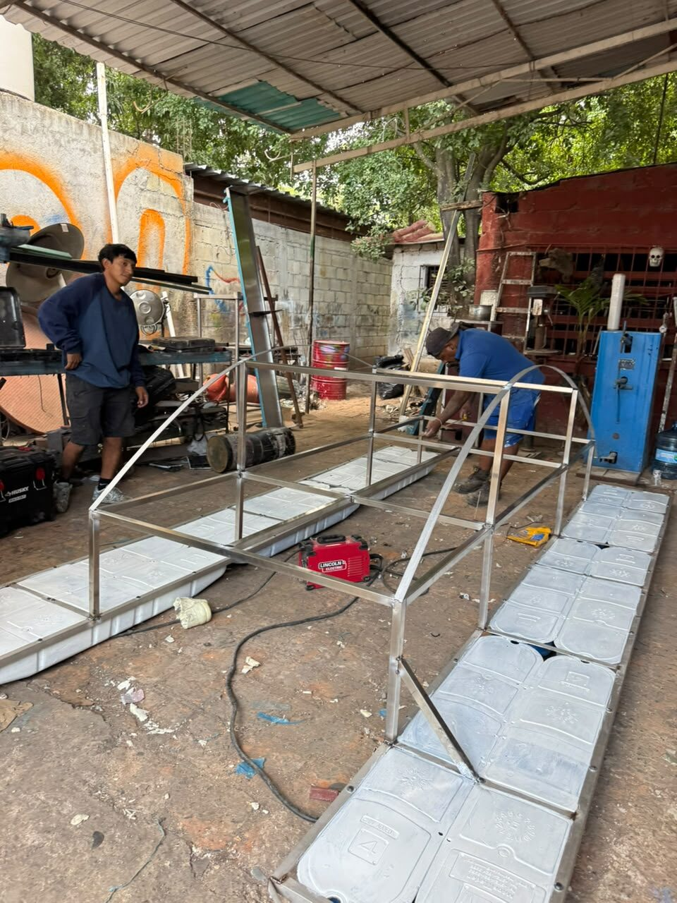
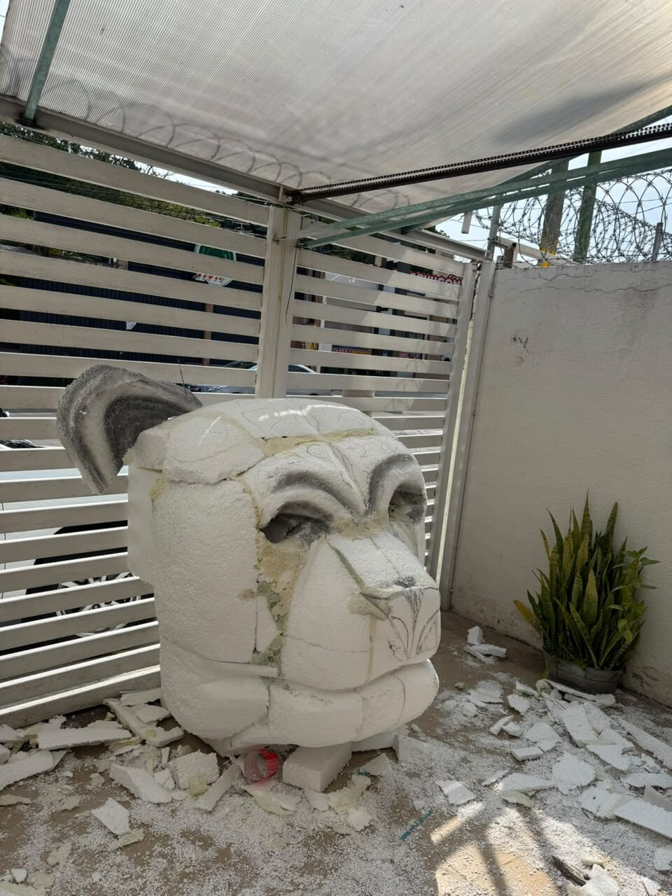
CHENEK BALAM
09 / 17
VIABILIDAD TÉCNICA Y OPERATIVA
Prototipo funcionando: estructura, propulsión eléctrica y recolección ya probadas.
Equipo completo: mecatrónica y gestión empresarial.
Fabricación local con componentes que se consiguen en México.
Dos modelos funcionales, fabricados por lotes y probados en agua antes de entregar.
CHENEK BALAM
10 / 17
MERCADO POTENCIAL
| Segmento | Clientes posibles |
|---|---|
| Quintana Roo | 11 robots comprometidos · interés en Monterrey |
| Pesca y Acuacultura (Chiapas) | Convenio con potencial de 22 robots en 5 años: 7 lagunas costeras, 10 en presas del Grijalva y 5 en lagunas y ríos |
| Municipios | Ríos urbanos, canales y lagunas |
| Turismo y empresas | Prestadores turísticos, cooperativas pesqueras y empresas con programas ambientales |
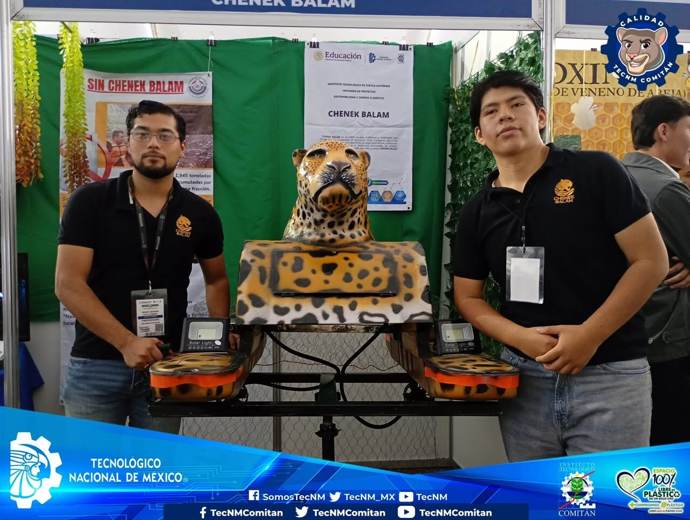
Además: áreas naturales, granjas acuícolas (suscripción de datos) y una red nacional en los 32 estados.
CHENEK BALAM
11 / 17
MODELO DE NEGOCIO Y ESTRATEGIA COMERCIAL
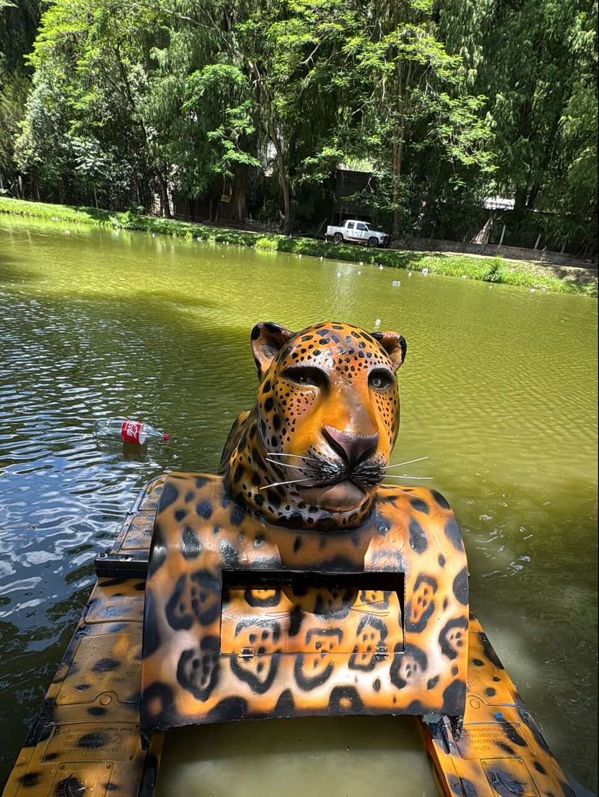
Dos modelos, con instalación y capacitación.
CHB01: $104,900 + IVA
($121,684 con IVA)
CHB02: $156,000 + IVA
($180,960 con IVA)
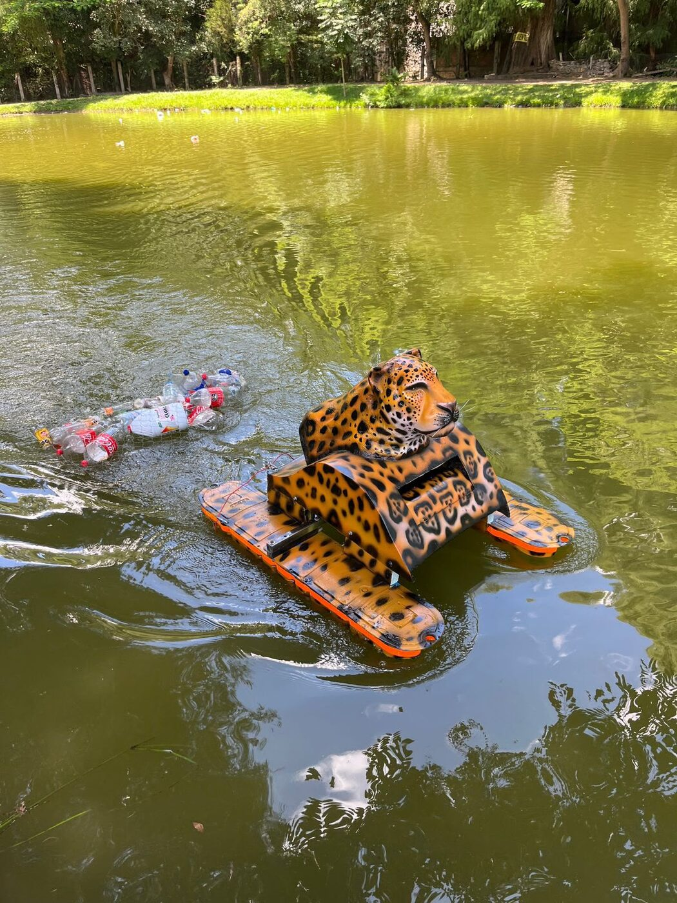
Servicio preventivo, refacciones y soporte local.
$15,000 al año
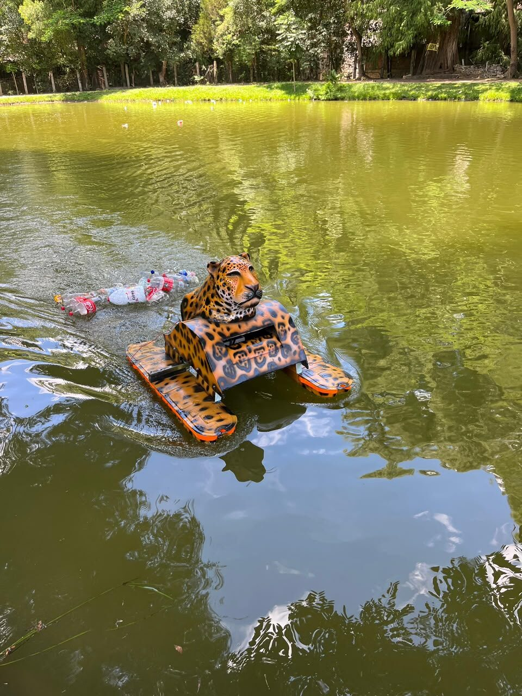
Suscripción con reportes de calidad del agua.
$1,500 al mes
Cómo vendemos: convenios con gobierno, padrón de proveedores, demostraciones en campo y anticipo de 30 %.
CHENEK BALAM
12 / 17
VIABILIDAD ECONÓMICA
| Modelo | Costo | Precio sin IVA | Precio con IVA | Ganancia | Margen |
|---|---|---|---|---|---|
| CHB01-27 Catamarán | $48,000 | $104,900 | $121,684 | $53,753 | 51 % |
| CHB02-27 Jaguar Inteligente | $105,670 | $156,000 | $180,960 | $45,650 | 29 % |
Punto de equilibrio
11 robots al año
Inversión total
$483,384
Utilidad neta año 1
$125,118
Recuperación
2.9 años
TIR a 5 años
31.3 %
ROI a 5 años
138 %
CHENEK BALAM
13 / 17
IMPACTO Y EMPLEO
Menos plástico en ríos, lagunas y en el Sumidero, sin emisiones ni ruido.
Nadie arriesga su salud en el agua y las comunidades conocen la calidad de su agua.
Protege la pesca y el turismo, dos motores de la economía de Chiapas.
19
empleos directos
25
empleos indirectos
Con los 11 robots de Quintana Roo. Directos: socios, armado, software, instalación, mantenimiento. Indirectos: 2 operadores por robot y proveedores locales.
CHENEK BALAM
14 / 17
POTENCIAL DE CRECIMIENTO
ESCENARIO 1
317 empleos
11 robots de Quintana Roo
44 en el año 1 · 102 en el año 2
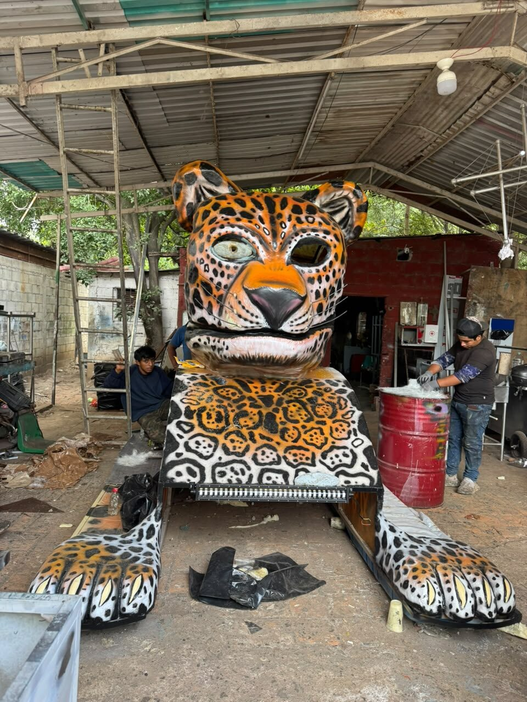
ESCENARIO 2
684 empleos
+ Monterrey y Pesca en todo Chiapas
87 en el año 1 · 262 robots operando
ESCENARIO 3
762 empleos
Un CHENEK BALAM en los 32 estados
Casi 300 robots y la primera red nacional de monitoreo del agua
Empleos totales (directos + indirectos) en el año 5. Metodología: 2 operadores por robot en operación, 1 técnico por cada 5 robots y 1 empleo en proveedores por cada 4 robots fabricados.
CHENEK BALAM
15 / 17
EMPRESA Y BIENESTAR LABORAL
1
HECHO ✓
Secretaría de Economía: Impulsora de Proyectos Inteligentes Chenek Balam
2
EN TRÁMITE
Solicitud ante el IMPI, expediente 3697201
3
SIGUIENTE
Ante notario y el SAT, para poder facturar
4
SIGUIENTE
Cuotas sobre el salario diario integrado de cada trabajador
Empleos con seguridad social, como lo marcan la Ley Federal del Trabajo y la Ley del Seguro Social.
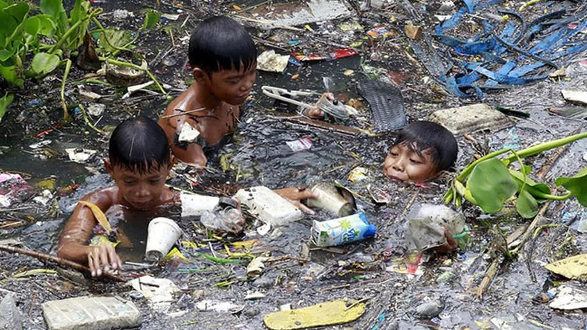
CHENEK BALAM
Un día, en el Cañón del Sumidero, vimos esto.
Ahí nació CHENEK BALAM.
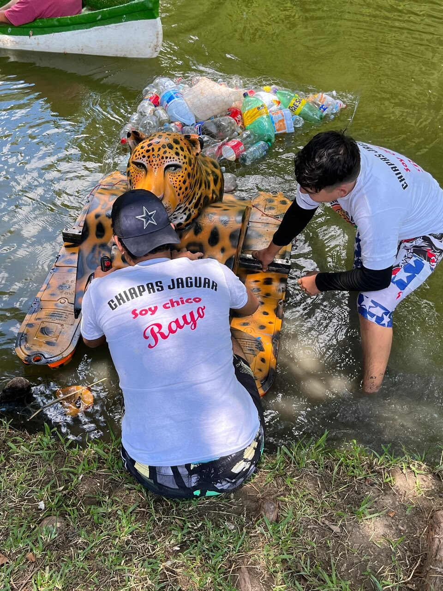
CHENEK BALAM
NUESTRO LLAMADO
Si quieren ayudar al planeta, empiecen hoy: no tiren plástico al río y apuesten por la tecnología hecha en Chiapas.
Gracias. Estamos listos para sus preguntas.
Equipo CHENEK BALAM · Instituto Tecnológico de Tuxtla Gutiérrez
Asesores: Juan Humberto Carpio Tovilla y Jorge Arturo Sarmiento Torres